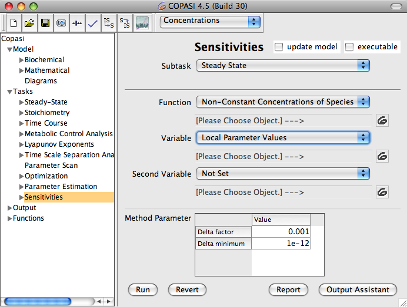
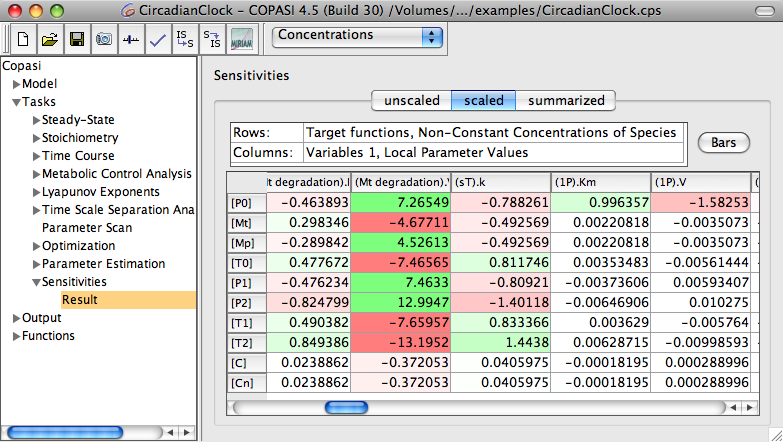

COPASI also allows the calculation of sensitivities of the model with respect to various parameters. Generally a sensitivity is a measure for how much a specific "observable" (this means any number that can be obtained by numerical analysis of the model) changes when a given parameter is changed.
In COPASI it is possible to calculate whole arrays of sensitivities for lists of "observables" with respect to lists of parameters. The settings for the sensitivities calculation can be found under "Tasks->Sensitivities". Let´s look at an example:
If you have a mode for which you can calculate a steady state you may be interested in how the steady state concentrations change with respect to different kinetic parameters. For this you could choose the following settings:
|  |
| Sensitivity Analysis dialog |
- For "Subtask" choose "Steady State". This means that you are interested in the sensitivities of a result of a steady state calculation.
- For "Function" choose "Non-Constant Concentration of Species". "Function" here indicates the observables, i.e. the values of which you want to know the sensitivities. We want to calculate the sensitivities of the steady state concentrations.
- Set "Variable" to "Local Parameter Values". Local parameters are all kinetic parameters that are directly specified for the reactions in the model.
To start the calculation just click on the run button.
|  |
| Sensitivity Analysis result |
The results will be displayed as color coded tables of numbers.